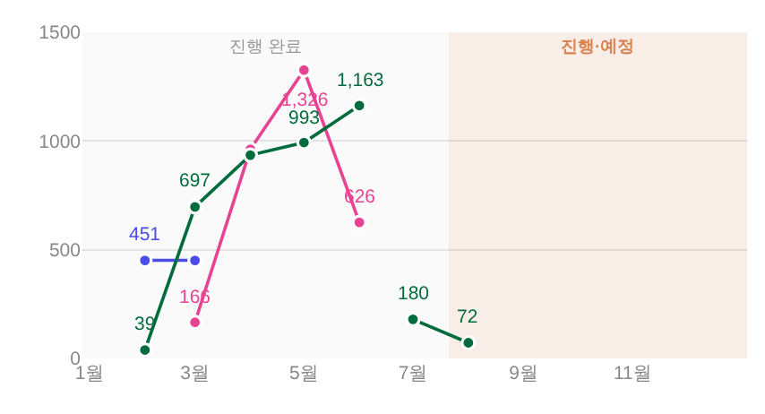
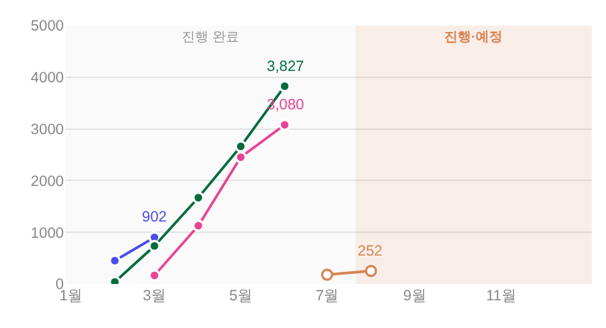
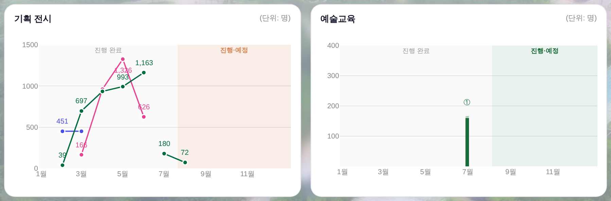
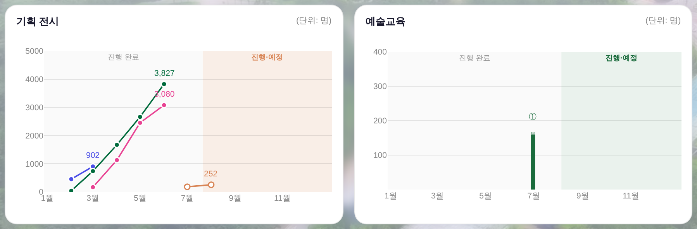

지시(운영자 260805) ① 「숨쉬는 섬 전시 전시현황 표기 = 주황색 비슷한 팔레트색」 ② 「최종 완료되었을때만 동그라미 각각을 칠해주고, 진행 중일때 집계는 빈 동그라미로」
③ 「동시에 전시가 같이 진행될 때 누계를 표기 — 차트는 누적그래프로 해서 누적된 수치를 차트 맨 꼭자락에, 그 지표말고는 숫자 안쓸게(차트가 너무 헤비해짐) · 그래프에 선 올릴때만 파악되도록」
④ 「예술교육은 공연하고 같게 · 지금 말고(이미 종료되었으니까) · 동시에 팔릴경우는 누적그래프로」 ·
대상 = _bizDrawExhibMonthly · _BIZ_EX_COL/_bizExCol ·
화면 = tools/scratch/shot_exmonthly.mjs ?qa=admin 1920×1080 · 값 = 커밋된 거울 data/exhib_daily_2026.js 실측 · 실API·PII 미접촉.
같은 데이터·같은 뷰포트. 전 = git show HEAD:index.html · 후 = 작업트리.


트레이스별 점의 fill/stroke 실측(shot_exmonthly.mjs probe) — 종료 = 선색 채움 + 카드 바탕 테두리 · 진행중 = 카드 바탕 채움 + 선색 테두리.
| 전시 | 상태 | 점 | fill(채움) | stroke(테두리) | 판정 |
|---|---|---|---|---|---|
| 숨 쉬는 SUM (07.21~11.01) | 진행중 | 2 | rgb(255,255,255) = 카드 바탕 | rgb(216,132,85) = 주황 --c2 | 빈 동그라미 |
| 프리뷰 (02.13~03.22) | 종료 | 2 | rgb(74,77,231) = --accent | 카드 바탕 | 채움 |
| 섬냥이 in 장도 (03.27~06.21) | 종료 | 4 | rgb(232,67,147) = 장도색 | 카드 바탕 | 채움 |
| 어린이미술전 (02.27~06.28) | 종료 | 5 | rgb(0,107,60) = 7층색 | 카드 바탕 | 채움 |
_BIZ_EX_COL['숨쉬는sum']='--c2'(팔레트 주황 · --peach-text와 같은 값) — 종전엔 7층 판정 초록이라 어린이미술전과 동색이었다. 조회는 정확 일치 + 포함 판정(키 6자↑) — 전시DB 정식명(「GS칼텍스 … <숨: 쉬는 SUM>」)과 거울 축약명이 같은 예외색을 받는다(거울 합류 규칙과 같은 자)._st≠active) 그 전시의 점 각각이 선색으로 채워진다 — 별도 조치 불요.누계 = 전시일일 누계 실측의 그 달 마지막 값(− 1/1 이전 기준선). 종전 월별 증가분을 다시 더한 게 아니라 원천 누계를 그대로 읽는다. 정정으로 누계가 줄어든 달은 앞 달 값 유지.
| 전시 | 후(월별 누계 — 화면 y값) | 꼭자락 라벨 |
|---|---|---|
| 프리뷰 | 2월 451 · 3월 902 | 902 |
| 어린이미술전 | 2월 39 · 3월 736 · 4월 1,671 · 5월 2,664 · 6월 3,827 | 3,827 |
| 섬냥이 in 장도 | 3월 166 · 4월 1,128 · 5월 2,454 · 6월 3,080 | 3,080 |
| 숨 쉬는 SUM | 7월 180 · 8월 252(집계중) | 252 |
_bizNiceStep 사다리 그대로).반반 줄 전체 전·후 — 우측 교육 카드는 픽셀 동일(끝난 화요살롱 = 실막대 160 그대로).


_bizDrawExhibMonthly 머리 주석에 명문).python3 tools/check_design.py ✓ — raw hex 1578/1578 무변 · 신규 색·토큰·:root 0 (주황 = 기존 토큰 --c2 이름 참조뿐 · 빈 동그라미 채움 = 기존 --surface-solid)npm run check ✓ (check_refs · build_annual_yr 포함)